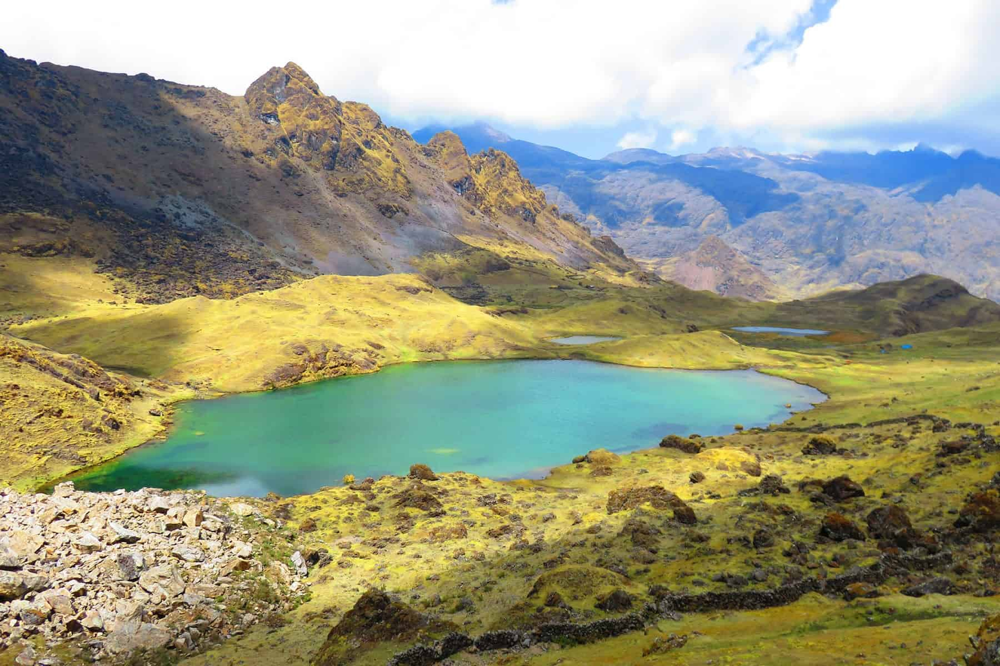
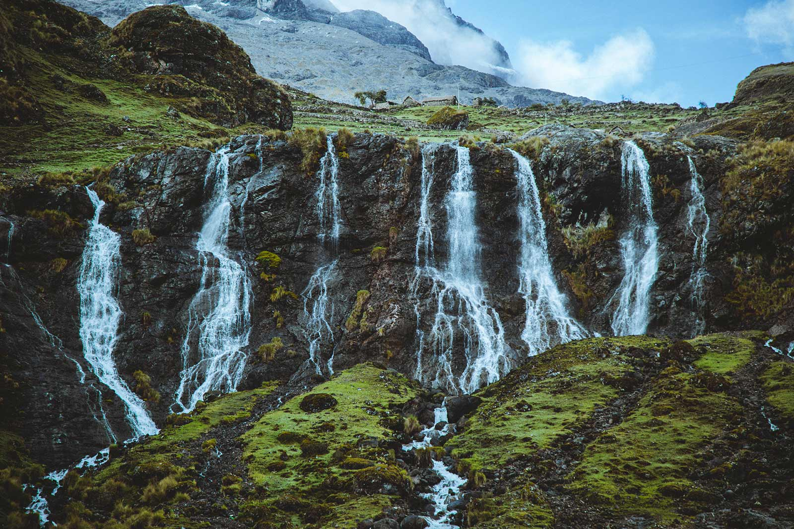
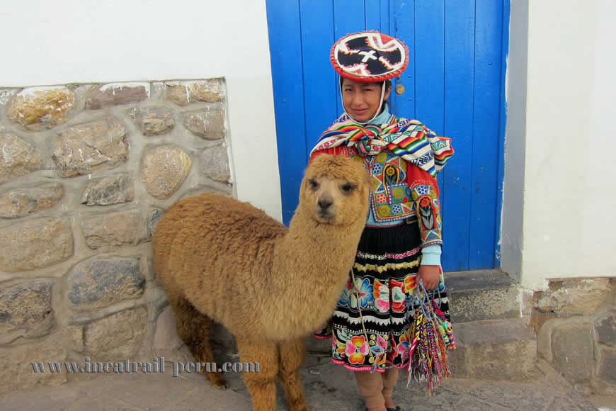
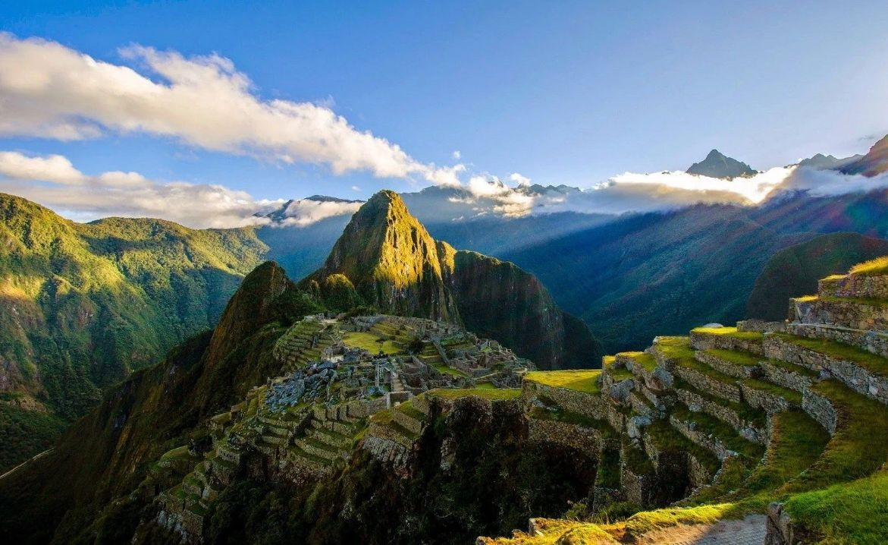
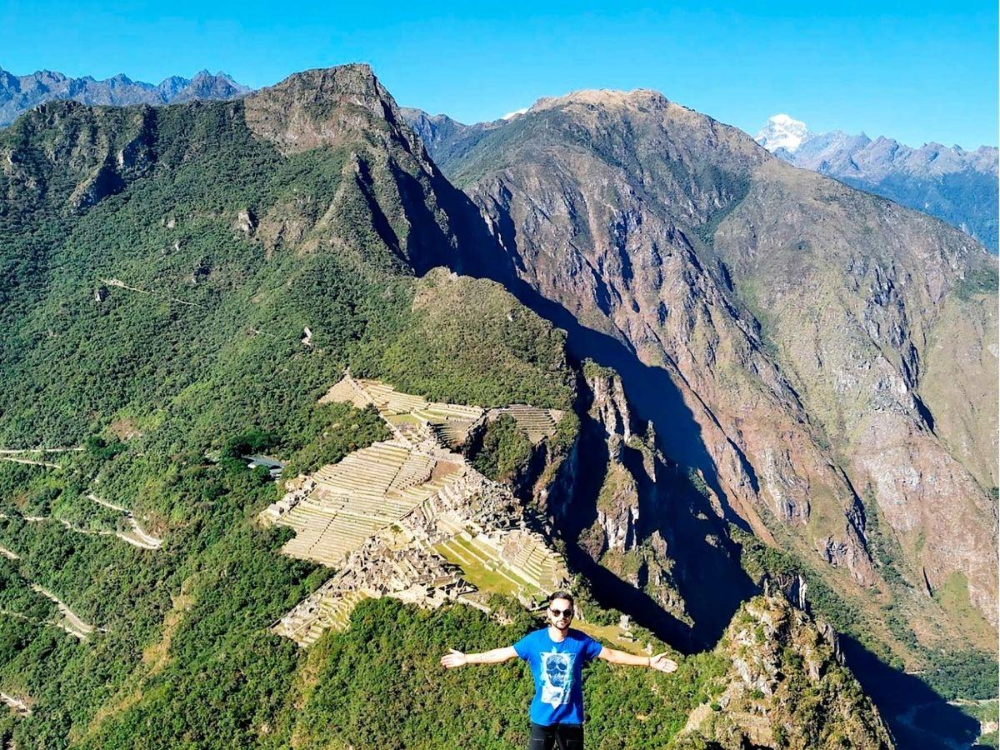
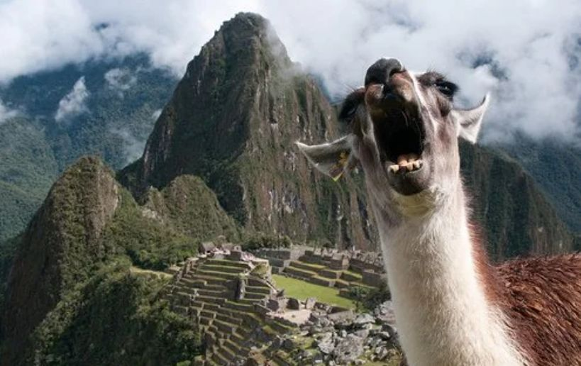

Om 05:00 vertrekken we vanuit Cusco. Via de markt van Calca (ontbijt niet inbegrepen) rijden we omhoog naar het startpunt bij Lares. Optioneel: eerst even de lokale warmwaterbaden inzwemmen voor de trekking begint.
Na 5 à 6 uur wandelen door spectaculair Andeslandschap met lokale Quechua-gemeenschappen en alpaca's langs het pad arriveert de groep in Sondor (3.800m) — kamperen in tweepersonstenten onder een sterrenhemel zonder lichtvervuiling.
Vandaag het zwaarste deel van de combinatietocht: de beklimming van de Huacawasi-pas op 4.500 meter (3 à 4 uur klimmen). Na de lunch begint de 4 uur durende afdaling naar Pucara (3.100m), net boven de Heilige Vallei.
De beloningsavond: genieten van een maaltijd onder de sterren bij het kamp in Pucara, met uitzicht over de vallei richting de Urubamba-rivier.


Om 06:00 worden we opgehaald voor het treinstation van Ollantaytambo. De trein brengt ons naar kilometer 104 — het startpunt van de korte Inca Trail. De wandeling over dit onvergetelijke stuk van de originele Inca Trail leidt langs spectaculaire berglandschappen rechtstreeks naar de Verloren Stad.
Overnachting in Aguas Calientes, het stadje aan de voet van Machu Picchu, met uitzicht op de ruisende Urubamba-rivier vanuit het hotel.



Om 06:15 neemt de groep de bus naar Machu Picchu. Om 07:00 gaan de poorten open — staan we voor het Wereldwonder van de Inca's.
Begeleide rondleiding (circuit 3B, ca. 2 uur) langs de heilige tempels, de Intihuatana-steen en de prachtig aangelegde terrassen. Daarna verlaat de groep even de site om tussen 09:00 en 09:30 opnieuw te betreden voor...
🏔️ De beklimming van Huayna Picchu! Deze iconische bergtop achter de ruïnes klimmen we in ca. 1 uur op. Het uitzicht van boven? Onbeschrijflijk. De afdaling duurt ca. 45 minuten.
Na het bezoek lopen we terug naar Aguas Calientes voor de laatste vrije uren. Om 15:20 vertrekt de trein naar Ollantaytambo, van waaruit privévervoer ons terugbrengt naar Cusco.